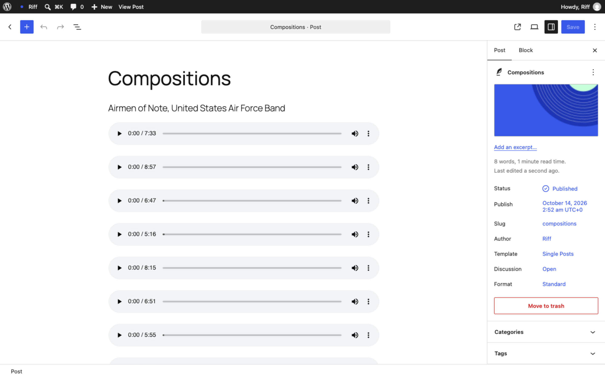
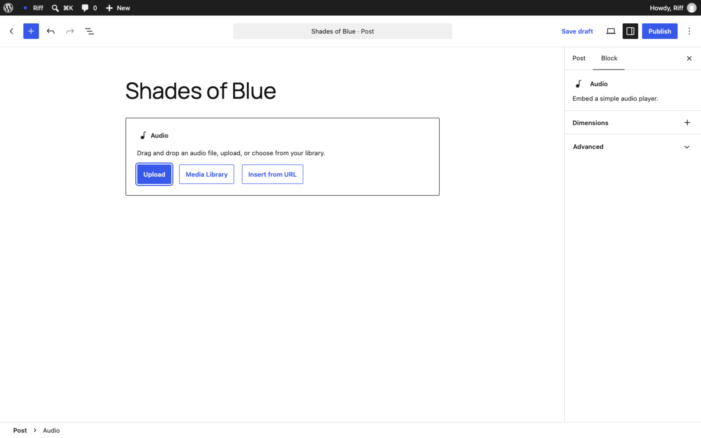
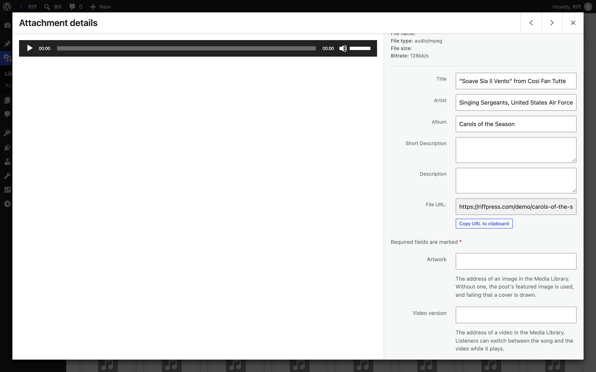
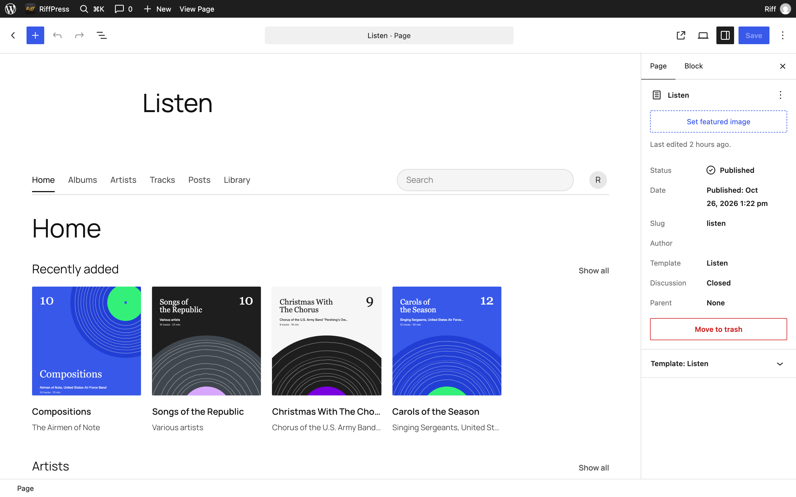

Riff / Add your music
Add your music
How an album goes onto a WordPress site with Riff, starting from nothing. No code, and nothing to configure.
Before you start
You need a WordPress site. WordPress is free software that runs on a web host. Most hosts set it up in a few clicks, and any host will do as long as it runs WordPress 7.0 or newer. Once it is up, you sign in at your site's address followed by /wp-admin. That is the dashboard, where everything below happens.
Then install Riff. In the dashboard, go to Plugins, then Add New Plugin, then Upload Plugin, choose the zip, and activate it.
The demo is a WordPress site running in your browser with Riff already installed. Its dashboard is at /wp-admin too, so you can follow every step here without a site of your own.
An album is a post
In WordPress, a post is a page of writing made of blocks: a paragraph is a block, an image is a block, an audio file is a block. Riff treats any post with audio in it as an album. The post's title is the album's name, and each Audio block is a track, in the order they appear.

Add the tracks
- Go to Posts, then Add Post.
- Type the album's name where it says Add title.
- Click the empty line below it, type
/audioand press Enter. An Audio block appears. - Press Upload and choose the first track. MP3, M4A, FLAC, WAV and OGG all work.
- Add another Audio block for each track. Drag a block up or down to change the order.

Titles, artists and covers come from the files
When a file is uploaded, WordPress reads the tags inside it: the title, the artist, the album, and the cover art if there is one. Riff shows them in the player, on the lock screen and in the library. If a file has no tags, or the wrong ones, go to Media, then Library, click the file and edit them there.
The same screen has two fields Riff adds. Artwork is a cover for that one track, if it differs from the album's. Video version is the address of a video in the library, for a song that has one; listeners can switch between the song and the video while it plays.

The album's cover is the post's featured image. In the editor, press Set featured image in the sidebar and upload it. If you skip this, Riff draws a cover: a record with one groove per track.
Publish
Press Publish, then View Post. Tap a track. The player bar appears along the bottom and keeps playing while you scroll, open another post, or lock your phone. Tap the bar for Now Playing.
One page where everything plays
Riff can also give the site a library: one page that lists every album and plays any of them without leaving the page.
- Go to Pages, then Add Page, and title it Listen, or whatever you like.
- Click the empty line, type
/riffand choose the Riff block. - Press Publish.

To make it the front page of the site, go to Settings, then Reading, choose A static page, and pick it as the homepage.
Many albums at once
If you have a folder of files per album, the repository includes a script that turns a folder of audio into a post, with the tracks in order and the tags read from the files. It is how the demo's nine albums were made. See seed.php on GitHub.